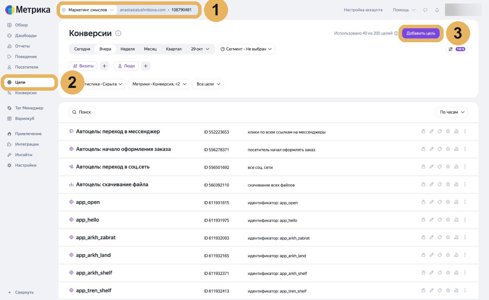
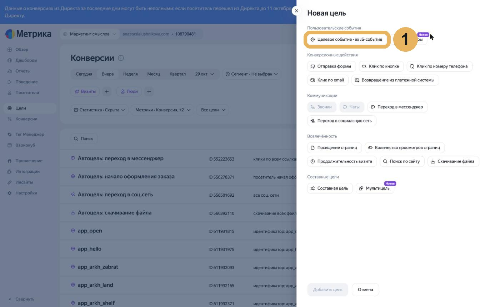
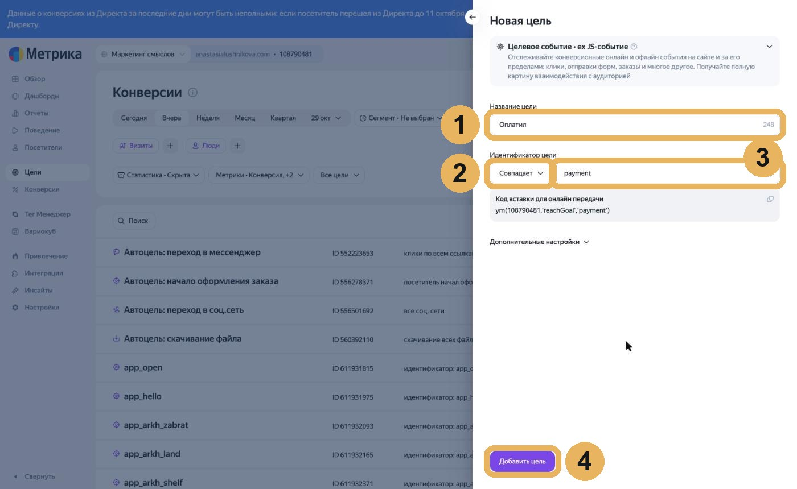
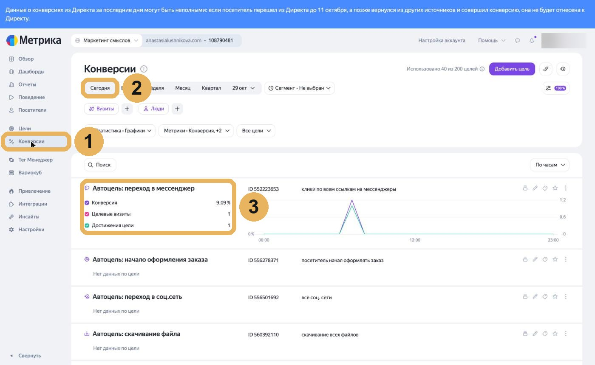
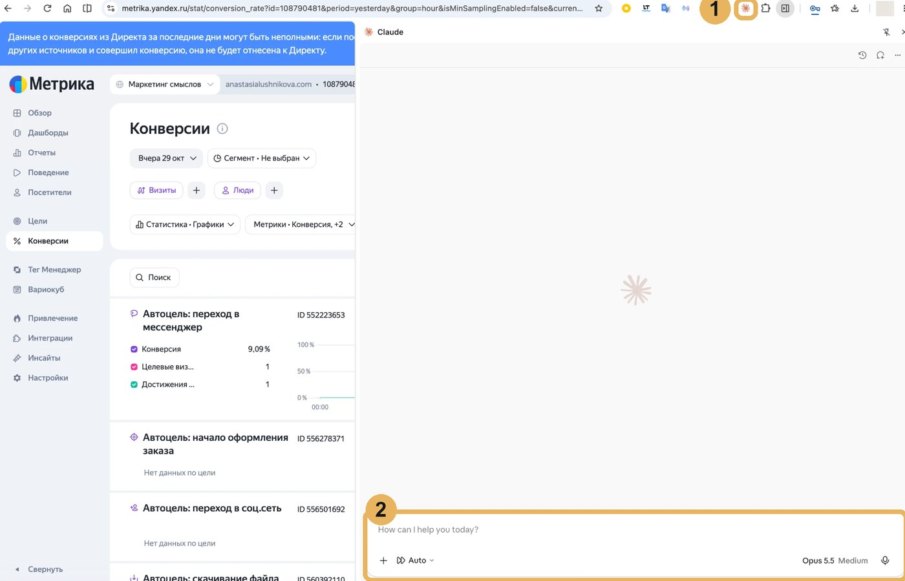
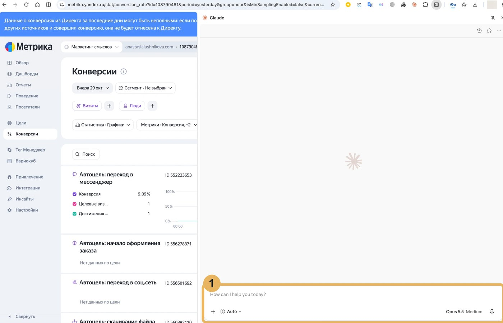

Хочу как у Анастасииинструкция
Модуль 5.1
Цели в Метрике: по шагам
Всё, что в видео показано быстро, здесь по шагам и со скринами. Идите сверху вниз, на каждом шаге сверяйтесь с картинкой.
ПонадобитсяДоступ к Яндекс Метрике сайта, где лежат материалы и продукт, и список целей от проводника. Систему собираете клиенту? Тогда доступ к его Метрике, его даёт клиент.
Способ 1. Руками, по скринам
1
Откройте цели своего счётчика
Зайдите на metrika.yandex.ru и выберите счётчик своего сайта (1). Номер счётчика это цифры рядом с адресом сайта, проводник может его спросить. Слева нажмите «Цели» (2), справа сверху «Добавить цель» (3).

Должны увидеть: справа выехало окно «Новая цель» со списком типов.
2
Выберите тип «Целевое событие»
В разделе «Пользовательские события» нажмите «Целевое событие · ex JS-событие». Раньше этот тип назывался «JavaScript-событие», в видео он звучит так же.

Должны увидеть: появились два поля: «Название цели» и «Идентификатор цели».
3
Впишите название и идентификатор
Название пишите по-русски, как Вам понятно, например «Оплатил» (1). В условии выберите «Совпадает» (2). В поле рядом вставьте идентификатор из списка проводника буква в букву, например payment (3). Нажмите «Добавить цель» (4). Строку «Код вставки» никуда переносить не нужно, код на страницы ставит проводник.

Должны увидеть: цель появилась в списке, рядом надпись «идентификатор: payment».
Не получилось: Метрика пишет, что такая цель уже есть? Значит, её завели раньше, переходите к следующей.
4
Повторите для каждой цели из списка
Шаги с первого по третий повторите для каждой строки списка проводника: открыл материал, нажал на продукт, оплатил и остальные. Одна строка списка, одна цель.
Должны увидеть: в списке целей все идентификаторы из списка проводника.
5
Проверьте цели на тесте
Пройдите путь сами: откройте материал, нажмите на продукт. На время теста выключите блокировщик рекламы в браузере, он может прятать визит от Метрики. Через несколько минут откройте «Конверсии» (1), период «Сегодня» (2) и найдите свою цель (3).

Должны увидеть: у цели в строке «Достижения цели» стоит единица или больше.
Не получилось: под целью «Нет данных по цели»? Подождите ещё немного и обновите страницу. Сверьте идентификатор со списком проводника буква в букву. Не помогло, напишите проводнику «я застрял» и пришлите скрин.
Способ 2. Цели заводит Claude в Chrome
Расширение Claude в Chrome само открывает Метрику и нажимает кнопки, Вы только даёте ему список и смотрите. Удобно, когда целей много или систему собираете клиенту.
1
Поставьте расширение Claude в Chrome
Откройте claude.ai/chrome в браузере Chrome и нажмите «Добавить в Chrome». Войдите в тот же аккаунт Claude. Справа вверху у браузера появится значок Claude, по нему открывается боковая панель с чатом (1). Внизу панели поле для сообщения (2).

Должны увидеть: справа открылась панель Claude с полем для сообщения.
2
Откройте Метрику в этой вкладке
Зайдите на metrika.yandex.ru под аккаунтом, где лежит счётчик сайта. Расширение работает в Вашем браузере, поэтому вход в Метрику делаете Вы сами, пароль ему не передаёте.
3
Попросите проводника собрать промпт
Напишите проводнику: «Собери промпт для Claude в Chrome, чтобы он завёл цели в Метрике по моему списку». Проводник подставит адрес сайта и свой список целей. Готовый промпт выглядит так:
Открой в Яндекс Метрике счётчик сайта vash-sayt.ru.
Заведи цели по списку ниже. Тип цели «Целевое событие», условие «Совпадает», идентификатор вписывай буква в букву.
Если цель с таким идентификатором уже есть, пропусти её.
Ничего, кроме целей, не меняй: настройки счётчика, код и доступы не трогай.
В конце пришли таблицу: название, идентификатор, заведена или уже была.
Открыл материал · open_material
Нажал на продукт · click_product
Оплатил · payment
4
Вставьте промпт в панель и следите за работой
Вставьте промпт в поле внизу панели Claude (1) и отправьте. Расширение может спросить разрешение действовать на сайте Метрики, разрешите. Пока оно работает, вкладку не закрывайте.

Должны увидеть: в ответе таблица со всеми целями из списка, а в разделе «Цели» в Метрике появились эти идентификаторы.
Не получилось: расширение остановилось или пишет, что не видит кнопку? Заведите оставшиеся цели руками, по способу 1.
5
Попросите расширение проверить тест
Пройдите путь сами: откройте материал, нажмите на продукт. Через несколько минут напишите в панель:
Открой в Метрике отчёт «Конверсии» за сегодня по счётчику сайта vash-sayt.ru.
Напиши по каждой цели из моего списка: есть достижения или «Нет данных по цели».
Должны увидеть: у целей, которые Вы прошли на тесте, есть достижения.
Не получилось: где-то «Нет данных по цели»? Сверьте идентификатор со списком проводника и напишите проводнику «я застрял».